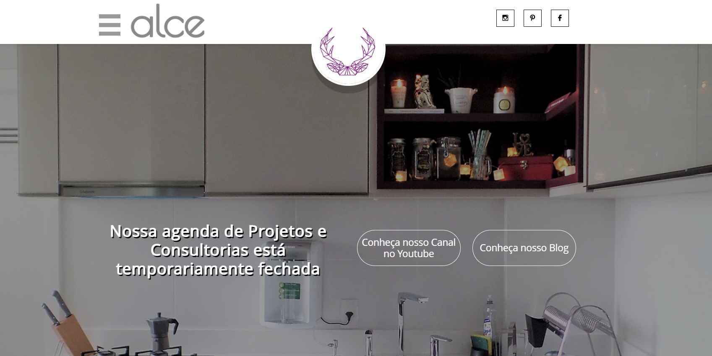
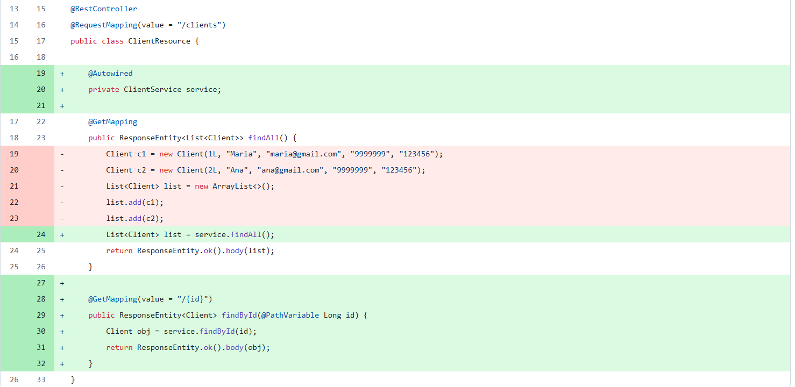
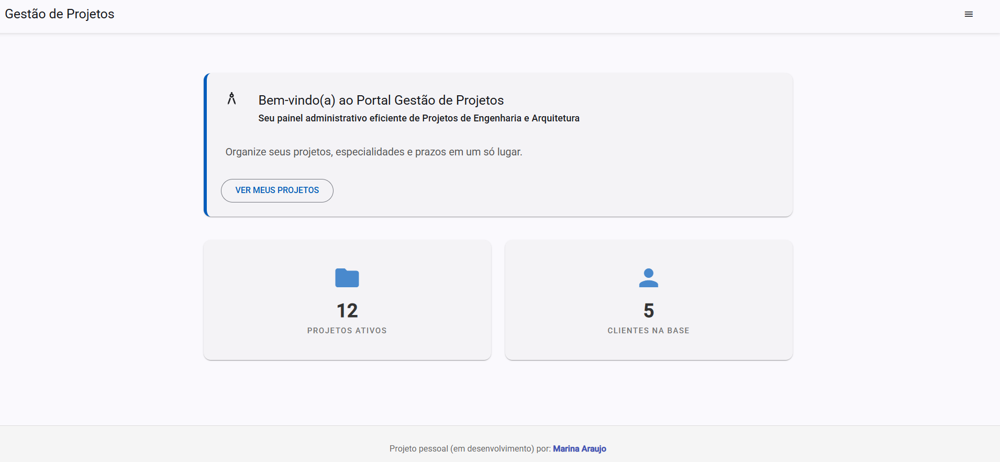
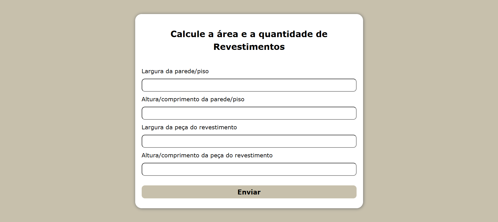

Marina Araújo
Frontend Developer (React) | UI/UX & Design Thinking | Gestão de Projetos
De espaços físicos a interfaces digitais.
Com mais de 7 anos de experiência liderando projetos na Arquitetura, hoje aplico meu olhar analítico e estético na construção de aplicações web com React, JavaScript e Figma.
Formada em Arquitetura e Urbanismo pela UFPE (2010) e MBA em Gestão de Projetos pela Unicsul (2013)
Estudando Engenharia de Software pela Unicesumar (2024–2027)
Sobre Mim
Minha jornada começou na Arquitetura, onde aprendi que todo projeto bem-sucedido nasce do equilíbrio entre estrutura e experiência do usuário. Hoje, transito para a Tecnologia trazendo essa mesma mentalidade: não apenas escrever código, mas construir produtos digitais funcionais e visualmente impecáveis.
Atualmente, foco no ecossistema Frontend (React e JavaScript), utilizando meu background em design para criar interfaces intuitivas no Figma e transformá-las em realidade no navegador.
O que me diferencia no desenvolvimento:
- Visão de Produto: Entendo a fundo como transformar requisitos de negócios em soluções visuais.
- Gestão Ágil: Trago maturidade em cronogramas, organização de workflows e entrega sob pressão.
- Colaboração: Facilidade extrema em dialogar com stakeholders e times multidisciplinares.
Soft Skills
Comunicação Estratégica
Transmissão clara de ideias em ambientes diversos, inclusive em inglês.
Mentalidade de Sócia
Foco em solução, prazos e na qualidade final da entrega (ownership).
Gestão de Fluxo
Experiência real com Roadmaps e priorização de tarefas em projetos complexos.
Resolução de problemas
Capacidade analítica para identificar gargalos e propor soluções criativas e viáveis.
Design Centrado no Usuário
Olhar apurado para usabilidade, hierarquia visual e estética funcional.
Hard Skills
Tecnologias Frontend
- React (em constante evolução)
- JavaScript (ES6+)
- HTML5 & CSS3 (Flexbox / Grid)
- Git & GitHub
Design & UI/UX
- Figma (Prototipagem)
- Photoshop
- Design Thinking & Usabilidade
Suporte & Gestão
- Metodologias Ágeis (Scrum / Kanban)
- Gestão de Projetos
- SQL / Modelagem de Dados
- Java & Spring Boot (Fundamentos)
- Planejamento
- Inglês Intermediário/Avançado
Background (Domínio de Ferramentas)
- AutoCAD, SketchUp, MS Project.
Meu Portfólio
Alguns dos projetos que realizei na área de desenvolvimento web

Antigo Site do Escritório
Um exemplo do layout que criei usando o construtor de sites HostGator.
Ver projeto
API de Gestão de Projetos (Backend)
Web Service desenvolvido com Spring Boot e JPA. Implementa arquitetura em camadas, tratamento de exceções e mapeamento objeto-relacional (ORM).
Ver Repositório
Interface de Gestão (Frontend)
Aplicação SPA desenvolvida em Angular para consumo da API de gestão. Foco em componentes reutilizáveis, serviços e experiência do usuário (UX).
Ver Projeto
Projeto de Cálculo de Revestimentos
Projeto feito para exercitar a prática de lógica e formulários através de JavaScript.
Ver projeto